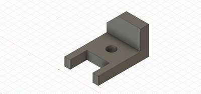

In this rotation, we learned the basics of Computer Aided Design (CAD). CAD is digital software that allows the user to design and create objects on their computer which can then be translated into the real world. Our first task was to design six different objects from a list that was given to us. Overall, the first one took me a while to figure out but all subsequent ones came very quickly. Once I figured out how to draw proper arcs and to extrude different segments of the design, I was able to quickly finish the task. All of these objects are displayed below.  Back to index